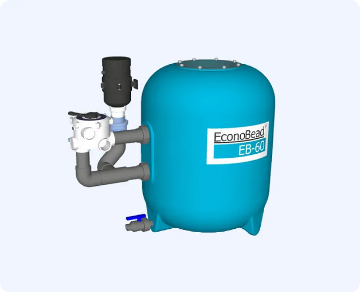

Вернуться в каталог

Фильтры для пруда
Фильтр EconoBeadfilter EB 140, 25 м³/ч, для пруда до 200000л
Цена и наличие
- 1 шт.11 904,21 BYN / шт.В наличии
Данные на 23.11.2026.
Характеристики
- Тип фильтра
- напорный
- Максимальный объем пруда без рыбы
- до 200000 л
- Максимальный объем пруда с рыбой
- до 100000 л
- Расход
- 25 м³/ч
- Для прудов max
- до 200000 л
- Для прудов с рыбой max
- до 100000 л
- Загрузка рыбой max
- 10 кг
- Давление
- 2 Бар
- Потери напора на фильтре
- 2 м
- Кол-во гранулята
- 250 л
- Производитель
- Китай
- Размеры (Ø х В)
- 90 х 126 м
- Рекомендуемый УФ min
- 100 Вт
Описание
EconoBeadfilter EB 140 - напорный фильтр для пруда.
ФИЛЬТР ДЛЯ ПРУДА БУСИНИЧНЫЙ ECONOBEADFILTER EB 140 для пруда 200 м3 Корпус напорного бусиничного фильтра изготовлен из прочного высококачественного полиэтилена. Рекомендуется доукомплектовать байпасом для снижения гидравлического сопротивления в системе. Комплектация фильтра: 6-ти позиционный клапан 63 мм, 2″ компрессор промывки фильтра нижний слив удаления грязи со дна фильтра прозрачная крышка визуального контроля процесса фильтрации фильтрующий гранулят